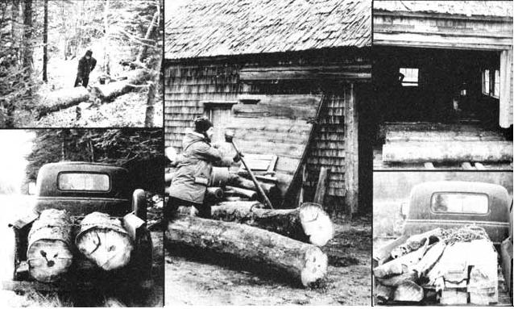

Photos below tell the story of how authors Paul Scanlon and Bob Leveque built their log cabins. Each morning for several days, Paul and Bob cut red spruce logs, loaded them into their truck, and hauled them to a sawmill.